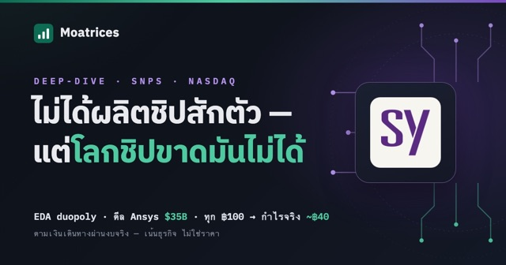
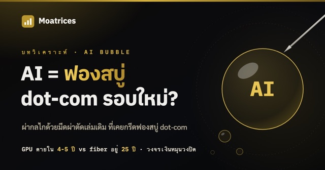
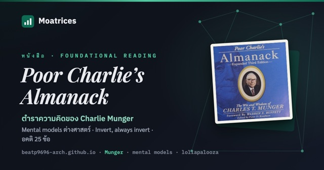
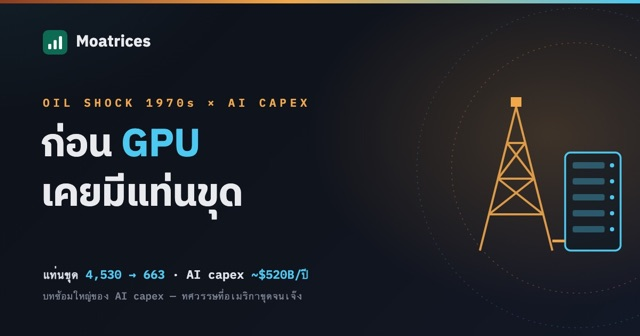
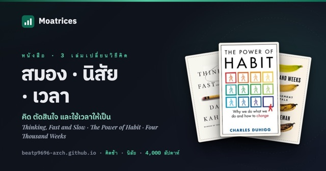
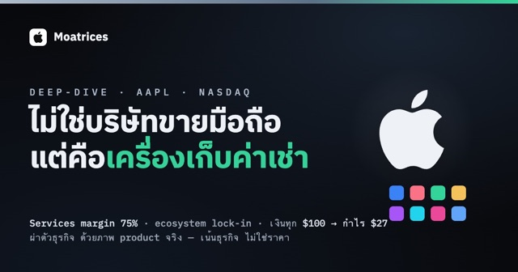
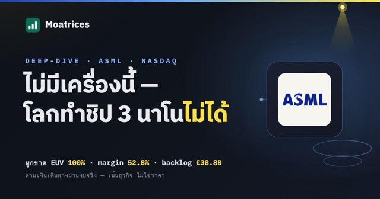
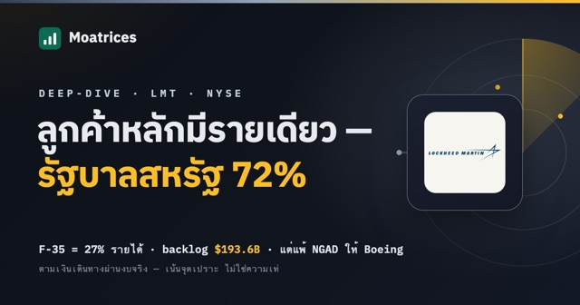

เจาะแก่นธุรกิจ หาคูเมืองที่แท้จริง
บันทึกการเรียนวิเคราะห์หุ้น US เชิงลึก แบบลงมือทำ — เน้นพื้นฐานธุรกิจ ความทนทานของรายได้ และทิศทางของกำไร ไม่ใช่ราคาหรือข่าวระยะสั้น
ที่นี่ไม่ใช่ที่บอกว่า "ซื้อตัวไหนดี" แต่เป็นที่ผมหัดอ่านธุรกิจให้เป็น ทีละบริษัท ทีละงบ ด้วยกรอบคิดสาย Fundamental — moat, Owner Earnings, ROIC และที่สำคัญที่สุดคือ "อะไรจะทำให้ผมรู้ว่าคิดผิด" (Kill Conditions) ทุกบทเขียนแบบเปิดเผยกระบวนการคิด ผิดถูกว่ากันตามหลักฐาน
ต้องอ่าน

หุ้นเด่น · SNPS ผ่าธุรกิจ SNPS (Synopsys) — EDA duopoly, ดีล Ansys $35B และความหวัง Physical AI ธุรกิจดีกลางเดิมพันใหญ่ — ตามเงิน ฿100 เดินทางผ่านงบ, ดีเบต 3 ยกของตลาด และแผงมอนิเตอร์ 5 สัญญาณว่า thesis ห่างเส้นแดงแค่ไหน อ่านต่อ →
บทความเด่น · AI Bubble AI = ฟองสบู่ dot-com รอบใหม่? — ผ่ากลไกด้วยมีดผ่าตัดเล่มเดิม ฟองสบู่คือตอนที่ราคากลายเป็นตัวอ้างอิงของตัวเอง — วงจรเงินหมุน Nvidia→hyperscaler→AI cloud และ "ดอกจันโหดร้าย": ต่อให้ thesis ถูก คนถือจะรอดไหม อ่านต่อ →
หนังสือเด่น Poor Charlie's Almanack — ตำราความคิดของ Charlie Munger 11 talks ของ Munger — mental models ต่างศาสตร์, คิดกลับด้าน, อคติ 25 ข้อ และทำไมธุรกิจวิเศษราคายุติธรรมชนะธุรกิจธรรมดาราคาถูก อ่านต่อ →ซีรีส์
Interactive
บทความล่าสุด
-
ก่อน GPU เคยมีแท่นขุด — Oil Shock 1970s: บทซ้อมใหญ่ของ AI Capex
28 ธ.ค. 1981 อเมริกามีแท่นขุดน้ำมัน 4,530 แท่น — ไม่มีใครรู้ว่านั่นคือยอดเขา ห้าปีต่อมาเหลือ 663 วันนี้ hyperscaler สี่เจ้าเท capex $130B ต่อไตรมาสด้วยตรรกะเดียวกับทศวรรษที่เชื่อว่าน้ำมันจะแพงตลอดไป บทนี้อ่านสองทศวรรษพร้อมกัน: เสียงกรีดร้องของราคาที่จ้างทั้ง demand destruction และ supply ใหม่, ดราม่า depreciation ที่ AMZN ตัดอายุ server แต่ META ยืด — สองคำตอบตรงข้ามที่ถูกพร้อมกันไม่ได้, คำถามว่าใครคือ swing buyer ของ compute เมื่อไม่มี OPEC คอยอุ้มราคา และแผนที่ผู้รอดจากปี 1986 — toll road, majors, wildcatters — ที่วางทาบ AI value chain ได้ทั้งแผ่น

อ่านต่อ → -
สมอง นิสัย เวลา — 3 เล่มที่ไม่ใช่หนังสือลงทุน แต่ทำให้ลงทุนดีขึ้น
Kahneman พิสูจน์ว่าผลงานนักเลือกหุ้นมืออาชีพแยกจากการทอยลูกเต๋าแทบไม่ออก Duhigg อธิบายว่าทำไมผลตอบแทนคือผลของนิสัย ไม่ใช่ไอเดีย และ Burkeman เตือนว่าชีวิตมีแค่ราว 4,000 สัปดาห์ ถือหุ้น 10 ปีคือใช้ไป 520 — สรุปแก่นสามเล่มแบบละเอียด พร้อมมุมว่าแต่ละเล่มแปลเป็นวินัยการลงทุนข้อไหน

อ่านต่อ → -
Poor Charlie's Almanack — ตำราความคิดของ Charlie Munger
หนังสือที่รวม 11 talks ของ Charlie Munger — Mental Models ต่างศาสตร์, คิดกลับด้าน (Invert, always invert), อคติ 25 ข้อที่ทำให้คนตัดสินใจพลาด และทำไมธุรกิจวิเศษราคายุติธรรมถึงชนะธุรกิจธรรมดาราคาถูก
อ่านต่อ → -
ผ่าธุรกิจ AAPL (Apple) — Services flywheel, ecosystem lock-in และเครื่องเก็บค่าเช่าที่ใหญ่ที่สุดในโลก
ไม่ใช่แค่บริษัทขายมือถือ — iPhone คือประตูสู่ ecosystem ที่เก็บ Services margin 75% จากฐานเครื่องพันล้านเครื่องที่ย้ายค่ายยาก บทนี้วาดตัว product จริง ผ่า App Store เก็บค่าเช่ายังไง เงินทุก $100 ไปไหน และแผงมอนิเตอร์ thesis (เน้นธุรกิจ ไม่ใช่ราคา)

อ่านต่อ → -
ผ่าธุรกิจ ASML — เครื่องพิมพ์แสงที่ผูกขาดโลกทั้งใบ แต่ราคาคือคำพนันปี 2030
ผู้ผลิตเครื่อง EUV รายเดียวในโลก — ส่วนแบ่งตลาด 100% ไม่ใช่ "เจ้าตลาด" แต่คือ "เจ้าเดียว" ที่ทำให้ TSMC/Samsung/Intel สร้างชิป 3 นาโนได้ รายได้ปี 2025 €32.7B (+15.6%) gross margin 52.8% net margin 29.4% บนเครื่องจักรหนักเป็นตัน + R&D €4.7B (14% ของยอด) ที่เป็นทั้งเกราะและภาระ — ผ่าฟิสิกส์ของการยิงเลเซอร์ใส่หยดดีบุก 50,000 ครั้ง/วินาทีให้เป็นพลาสมา 220,000°C, backlog €38.8B ที่ฟังดูใหญ่แต่เห็นอนาคตแค่ 1.2 ปีและยกเลิกได้, หลุมจีน 41%→29% ที่กำลังถูก export control ปิดวาล์ว, ลูกค้าจริงไม่ถึง 5 ราย และราคา $1,758 (P/E 62×, คืนเงินแค่ 1.2%/ปี) ที่จ่ายให้แผนโตเป็น 2 เท่าถึงปี 2030 (€44–60B) ไปแล้วเกือบเต็ม — เล่าด้วยภาพวาดของจริง: เครื่อง TWINSCAN, แหล่งกำเนิดแสง EUV, กรวยกลั่นกำไร, คิวลังเครื่องรอส่ง, ด่านศุลกากรกั้น EUV และตาชั่งราคา พร้อม Kill Conditions 6 ข้อ

อ่านต่อ → -
ผ่าธุรกิจ LMT (Lockheed Martin) — โรงงานอาวุธที่ backlog ยาว 2.6 ปี แต่กำไรมีแผลเปิด
โรงงานอาวุธที่ backlog $193.6B (+10%) ล็อกรายได้ล่วงหน้า 2.6 ปี — moat ระดับรัฐศาสตร์ switching cost 40–50 ปี แต่ขายให้ลูกค้ารายเดียว (รัฐบาลสหรัฐ) 72% ด้วยสัญญาล็อกราคา ~60% ของยอด และเพิ่งขาดทุนซ้ำสองปีติดบนโปรแกรมลับ $555M → $950M ที่บริษัทเตือนเองว่า "อาจมีอีก" จน EPS หายไป 22% ในสองปี ($27.55 → $21.49) ทั้งที่รายได้โตทุกปี — ผ่า 4 segment ที่กำลังสลับบทบาท: Aeronautics (F-35) margin ไหลลงสามปีติด 10.3% → 6.9% ขณะ MFC ขีปนาวุธโต +14% margin 13.8% เพราะคลังแสงทั้ง NATO ว่าง, การแพ้ NGAD ให้ Boeing จนไม่มีเครื่องบินรบยุคถัดไปในมือ, เครื่องจักรซื้อหุ้นคืนที่คืนเงิน 89% ของ FCF แต่มี Executive Order ขู่แขวน และราคา $521.82 (P/FCF 17.3×) ที่ตลาดจ่ายให้ "แผลจะปิด margin จะฟื้น" ไปแล้วครึ่งทาง — เล่าด้วยภาพเคลื่อนไหว ระดับ instrument: สายการผลิต F-35, คลังแสง backlog ที่มีประตูเบิกจ่ายบานเดียว, ห้องกล่องลับที่รั่วสีแดง และ HUD ล็อกเป้าราคา พร้อม Kill Conditions 6 ข้อที่วัดได้จาก filing รายไตรมาส

อ่านต่อ →